Empire Stone × Empire Granite — QA
Test Cases: E2E Flow — Mode 3 (Cut-to-Order)
เรื่องราวเดียวต่อเนื่องกันตั้งแต่มี Block พร้อมอยู่แล้วในสต็อก ยืนยันคำสั่งขายทั้งที่ยังไม่มีแผ่นหินจริง จนถึงฝ่ายผลิตตัดแผ่นจริงและออกใบแจ้งหนี้ ไม่ใช่การเทสฟีเจอร์แยกส่วน และไม่มีข้อไหนเป็นการดักฟิลด์บังคับ/error ทั่วไป (ยกเว้นข้อ Cut to Order ก่อนย้าย Block และข้อ Scan Verification ซึ่งเป็น gate จริงของกระบวนการ) — เดินตามได้เองแม้ไม่ใช่ technical user รวมขั้นตอนใหม่ "Request Material" (ADR-053) ที่เพิ่งสร้างวันเดียวกันนี้ด้วย ตัวเลข "ตัวอย่างจริง" มาจากการรันจริงที่ทำขึ้นเฉพาะสำหรับเอกสารนี้ ไม่ใช่ตัวเลขสมมติ
14Test Case ทั้งหมด
4หมวด
9High Priority
5Medium Priority
0Low Priority
F1. ขาย (Sale — Mode 3, Cut-to-Order)
ADR-018 — ยืนยันคำสั่งขายได้ทันทีแม้ยังไม่มีแผ่นหินจริง · 2 test cases
| TC ID | Scenario | Precondition | Steps | ข้อมูลตัวอย่าง | Expected Result | Priority | ภาพหน้าจอ |
|---|---|---|---|---|---|---|---|
| TC-E2E-M3-01 | เพิ่มบรรทัดสินค้า Material โหมด Cut-to-Order ใน Sale Order | มี Block พร้อมอยู่แล้วในสต็อกของ Material นี้ (Pricing Mode = Serial) แต่ยังไม่มีแผ่นสำเร็จรูปขนาดที่ลูกค้าต้องการอยู่ในสต็อก |
|
ลูกค้า = "ทดสอบ E2E - Test Customer" สินค้า = "Rosso Levanto Test - Slab" |
เพิ่มบรรทัดสำเร็จ ราคาต่อหน่วยขึ้นเป็นราคาตั้งต้นของสินค้า (list price) เนื่องจากยังไม่มีแผ่นจริงผูกกับบรรทัดนี้เลย | Medium | 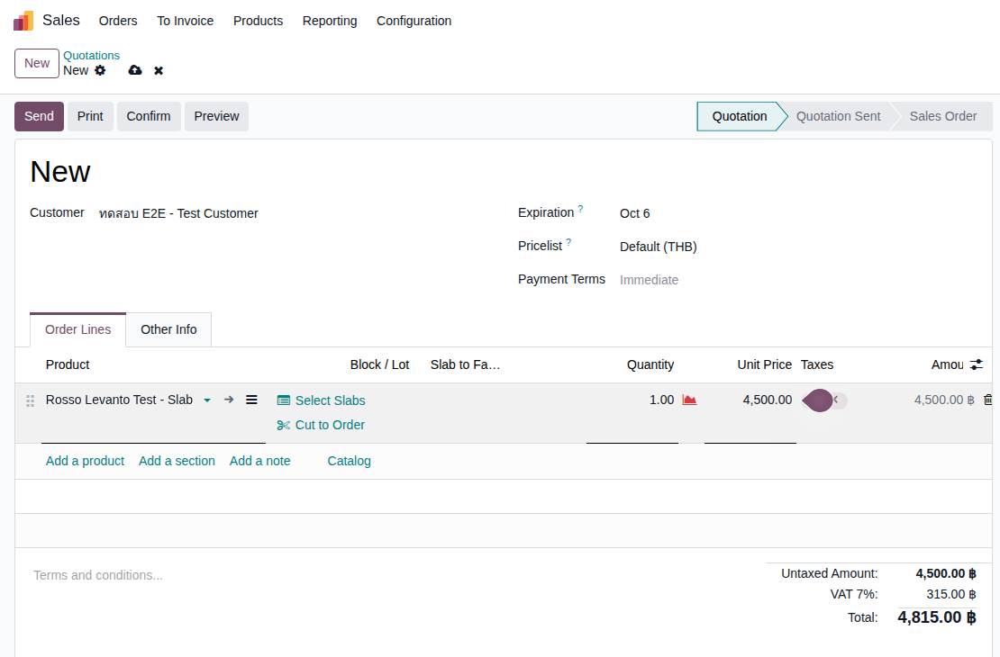 |
| TC-E2E-M3-02 | ยืนยัน (Confirm) Sale Order ได้ทันที โดยยังไม่ทราบขนาดที่จะตัด | ทำ TC-E2E-M3-01 เสร็จแล้ว |
|
- | SO เปลี่ยนสถานะเป็น Sales Order ยอดรวมคำนวณจากราคาตั้งต้นของสินค้า (ตัวอย่างจริง: S00096, 4,500 + VAT 7% = 4,815.00 บาท) — ราคานี้ยังไม่ใช่ราคาจริง จะคำนวณใหม่อัตโนมัติหลังฝ่ายผลิตตัดแผ่นเสร็จ (ดู TC-E2E-M3-08) มี Delivery Order เกิดขึ้นอัตโนมัติ 1 ใบ | High | 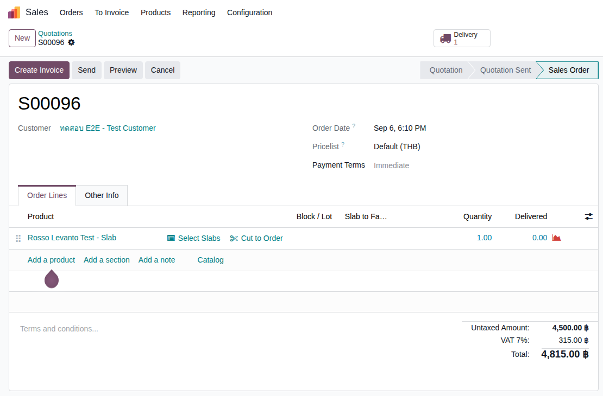 |
F2. การผลิต (Production — Factory Worklist / Request Material / Cut Order)
ADR-018 + ADR-053 — ย้าย Block ไปสถานีตัดก่อนเสมอ ก่อนสร้างใบสั่งผลิตได้ · 6 test cases
| TC ID | Scenario | Precondition | Steps | ข้อมูลตัวอย่าง | Expected Result | Priority | ภาพหน้าจอ |
|---|---|---|---|---|---|---|---|
| TC-E2E-M3-03 | เห็นคิวงานที่หน้า Factory Worklist | ทำ TC-E2E-M3-02 เสร็จแล้ว |
|
- | เห็นแถวของ SO นี้ขึ้นคิวงาน ช่อง "ต้องทำ" ระบุ "รอเลือก/ตัด Slab (Cut to Order)" คอลัมน์ "ความพร้อม Block" ขึ้น badge สีส้ม "ต้องย้าย Block ก่อน" | Medium | 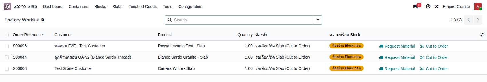 |
| TC-E2E-M3-04 | พยายามกด "Cut to Order" ก่อนย้าย Block ไปสถานีตัด หมายเหตุ: กันตัดจากก้อนที่ยังไม่ได้อยู่หน้างานจริง (ADR-053) — จำลองขั้นตอนหน้างานจริงที่ต้องยกก้อนหินไปวางที่แท่นตัดก่อนเริ่มงาน |
ทำ TC-E2E-M3-03 เสร็จแล้ว |
|
Block = BLK-26-0013 ขนาดที่จะตัด = 1.2 × 0.8 ม. |
ระบบฟ้อง error สองภาษาทันที ระบุปริมาณที่ต้องการเทียบกับที่มีอยู่จริงที่สถานีตัด บันทึกไม่ผ่าน — ตัวอย่างจริง: "Block BLK-26-0013 ยังไม่ได้ย้ายไปสถานีตัด (Stone Production) เพียงพอ — ต้องการ 0.019 m³ แต่อยู่ที่สถานีตัดแล้วแค่ 0.000 m³" | High | 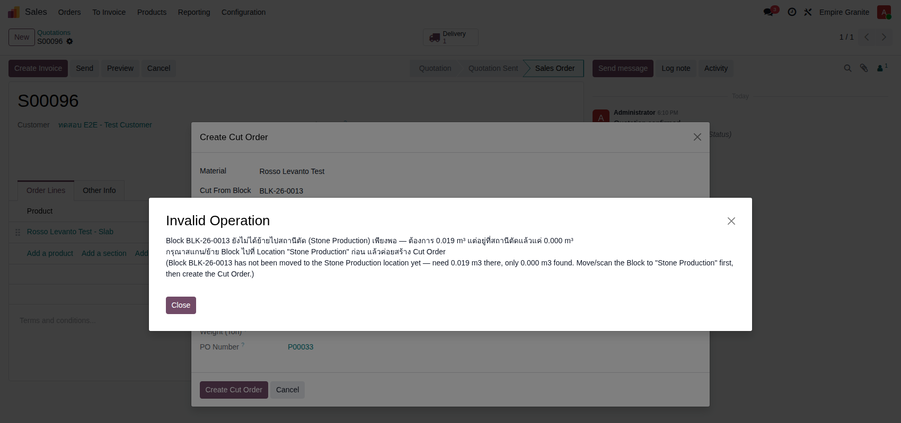 |
| TC-E2E-M3-05 | กด "Request Material" ขอย้าย Block ไปสถานีตัด | ทำ TC-E2E-M3-04 เสร็จแล้ว (เจอ error มาก่อน) |
|
Target L = 1.2 ม. Target H = 0.8 ม. Target Thickness = 0.02 ม. |
ระบบสร้างใบขอย้ายสินค้า (Internal Transfer) อัตโนมัติ 1 ใบ ปลายทาง "Stone Production" — ตัวอย่างจริง: EG01/STPR/00010 (Demand 0.02 m³) | High | 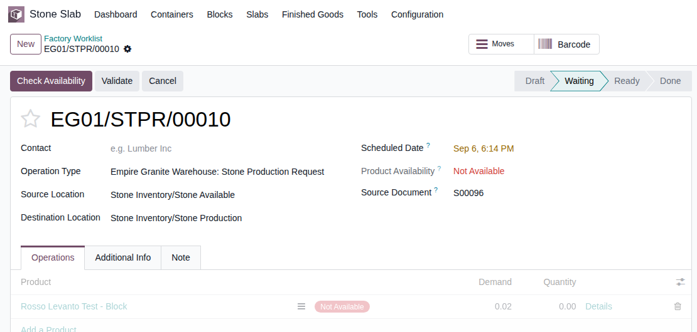 |
| TC-E2E-M3-06 | (ฝ่ายคลัง) ยืนยันใบขอย้าย — ระบุก้อนหินจริงที่จะใช้แล้ว Validate เช่นเดียวกับ Barcode app จริง: ระบบยังไม่เลือกก้อนหินให้ล่วงหน้า ฝ่ายคลังเป็นผู้ระบุว่าจะใช้ก้อนไหนตอนย้ายจริง (ADR-053) |
ทำ TC-E2E-M3-05 เสร็จแล้ว มีใบขอย้ายสถานะรออยู่ |
|
Lot = BLK-26-0013-BLK | ใบขอย้ายเปลี่ยนสถานะเป็น Done ก้อนหินย้ายไปอยู่ที่ Location "Stone Production" ครบตามจำนวนที่ขอ — ตัวอย่างจริง: EG01/STPR/00010 เลือก Lot ให้อัตโนมัติเพราะมีอยู่ตัวเดียวในสต็อกจุดนั้น | High | 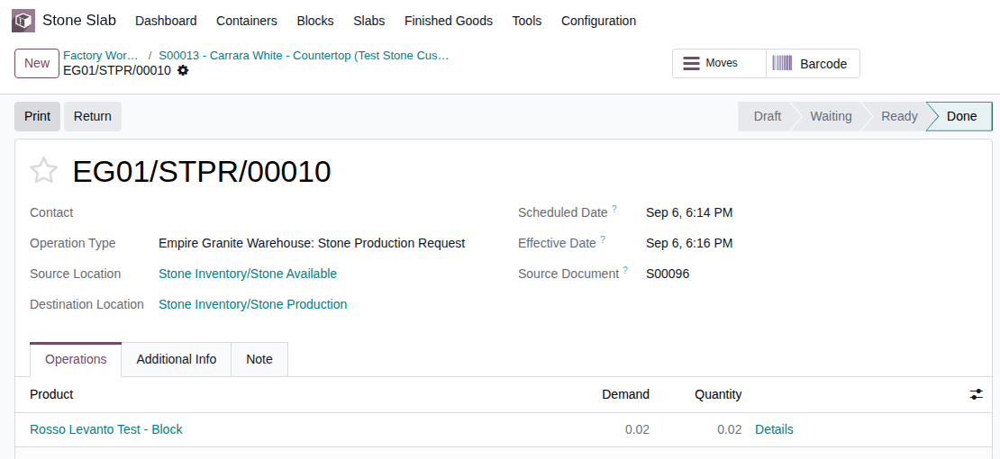 |
| TC-E2E-M3-07 | กด "Cut to Order" อีกครั้ง — สร้างใบสั่งผลิตสำเร็จ | ทำ TC-E2E-M3-06 เสร็จแล้ว |
|
Block = BLK-26-0013 ขนาดที่จะตัด = 1.2 × 0.8 ม. |
สร้างใบสั่งผลิต (Manufacturing Order) สำเร็จ ไม่มี error แล้ว เพราะ Block ถูกย้ายมาสถานีตัดครบตามจำนวนแล้ว — ตัวอย่างจริง: EG01/STCUT/00037 ปุ่ม "Complete Cut" ปรากฏพร้อมกดขั้นถัดไป | High | 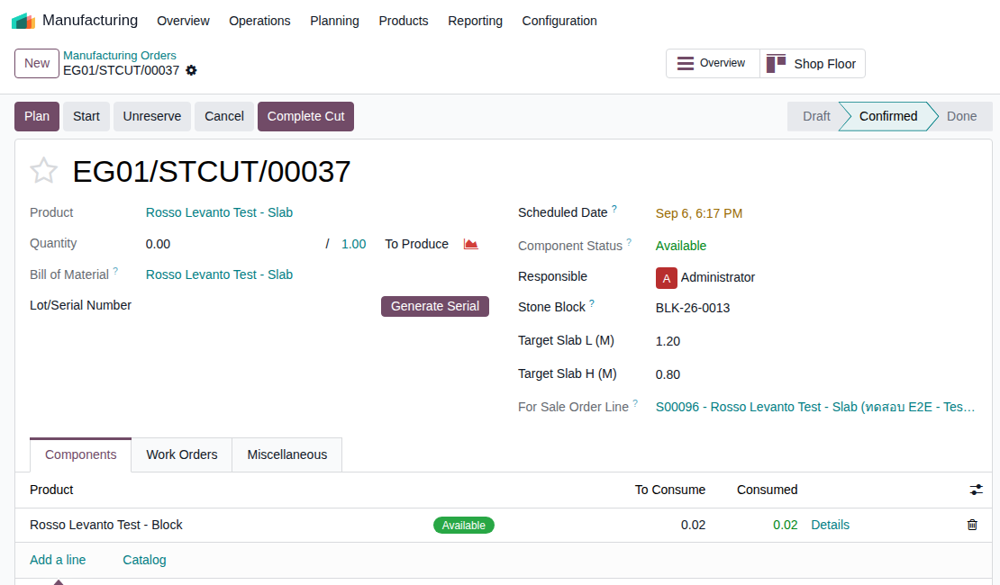 |
| TC-E2E-M3-08 | ตัดแผ่นเสร็จ (Complete Cut) — ราคาคำนวณใหม่อัตโนมัติ | ทำ TC-E2E-M3-07 เสร็จแล้ว |
|
- | ใบสั่งผลิตเสร็จสมบูรณ์ (สถานะ Done) เกิดแผ่นหินใหม่ 1 แผ่นตามขนาดที่ตัดจริง (Lot/Serial ใหม่) ผูกกับบรรทัด SO เดิมให้อัตโนมัติ ราคาต่อหน่วยของบรรทัด SO เปลี่ยนจากราคาตั้งต้นเป็นราคาจริงตามขนาดที่ตัดได้ — ตัวอย่างจริง: แผ่น BLK-26-0013 #3 (1.2×0.8 ม.) ราคา 4,320.00 บาท ยอดรวม SO เปลี่ยนจาก 4,815.00 เป็น 4,622.40 (รวม VAT) ทันที เห็นการเปลี่ยนแปลงบันทึกไว้ใน chatter log ของ SO | High | 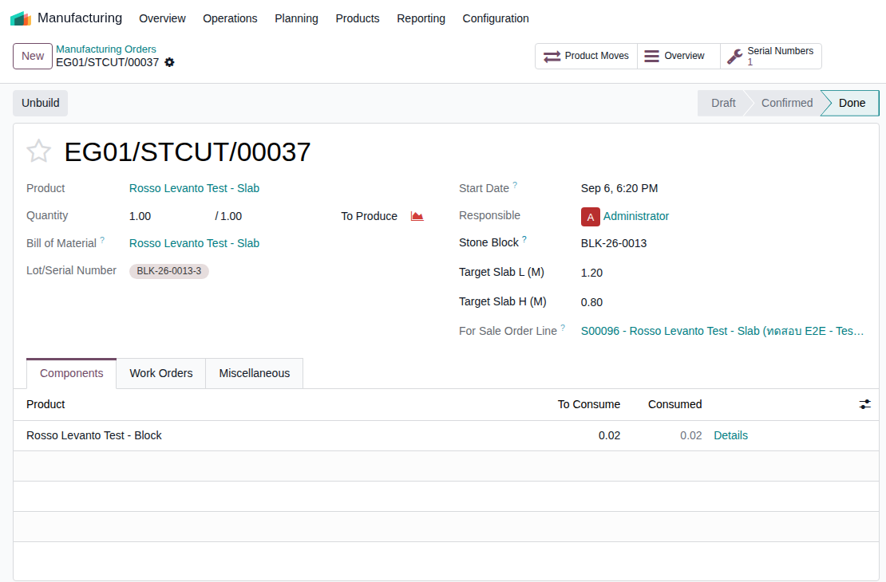 |
F3. จัดส่ง (Delivery — Scan Verification)
ADR-009 — ต้องสแกน/กรอก Serial ให้ตรงก่อน Validate เสมอ เหมือน Mode 2 · 2 test cases
| TC ID | Scenario | Precondition | Steps | ข้อมูลตัวอย่าง | Expected Result | Priority | ภาพหน้าจอ |
|---|---|---|---|---|---|---|---|
| TC-E2E-M3-09 | พยายาม Validate ใบส่งของโดยยังไม่กรอก Scanned Serial ให้ตรง หมายเหตุ: กันส่งแผ่นผิดให้ลูกค้าโดยไม่ได้ตรวจสอบก่อน (ADR-009) — กลไกเดียวกับ Mode 2 (พบจากการรันจริง: ใบส่งของอาจค้างสถานะ "Waiting" อยู่ ต้องกด "Check Availability" ก่อน 1 ครั้งให้ขึ้น "Ready" แล้วค่อยกด Validate ต่อ) |
ทำ TC-E2E-M3-08 เสร็จแล้ว มีใบส่งของอัตโนมัติรออยู่ |
|
- | ระบบฟ้อง error สองภาษาทันที: "สแกน Serial ไม่ตรง กรุณาสแกนให้ครบก่อน Validate: BLK-26-0013-3" บันทึกไม่ผ่าน | High | 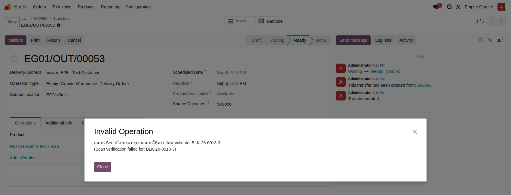 |
| TC-E2E-M3-10 | กรอก/สแกน Scanned Serial ให้ตรงแล้ว Validate | ทำ TC-E2E-M3-09 เสร็จแล้ว (เจอ error มาก่อน) |
|
Scanned Serial = BLK-26-0013-3 | ใบส่งของเปลี่ยนสถานะเป็น Done สำเร็จ — แผ่นที่ขายหายจากสต็อกที่ขายได้ (Available) แล้ว — ตัวอย่างจริง: EG01/OUT/00053 | High | 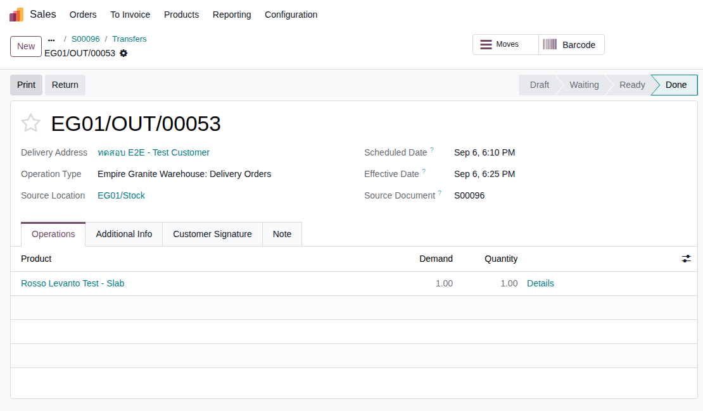 |
F4. บัญชี (Accounting + Payment)
ออกใบแจ้งหนี้ + รับชำระเงิน + ตรวจรายการบัญชี · 4 test cases
| TC ID | Scenario | Precondition | Steps | ข้อมูลตัวอย่าง | Expected Result | Priority | ภาพหน้าจอ |
|---|---|---|---|---|---|---|---|
| TC-E2E-M3-11 | สร้างและยืนยันใบแจ้งหนี้ลูกค้า (Customer Invoice) | ทำ TC-E2E-M3-10 เสร็จแล้ว |
|
- | ใบแจ้งหนี้สถานะ Posted ยอดรวมตรงกับ SO หลังตัดแผ่นเสร็จ รวม VAT — ตัวอย่างจริง: INV/2026/00011 (4,622.40 บาท = 4,320.00 ก่อน VAT + VAT 7% 302.40) บัญชีรายได้ขึ้น "411130 Sales Revenue - Cut-to-Order (Mode 3)" ถูกต้องตามโหมด | High | 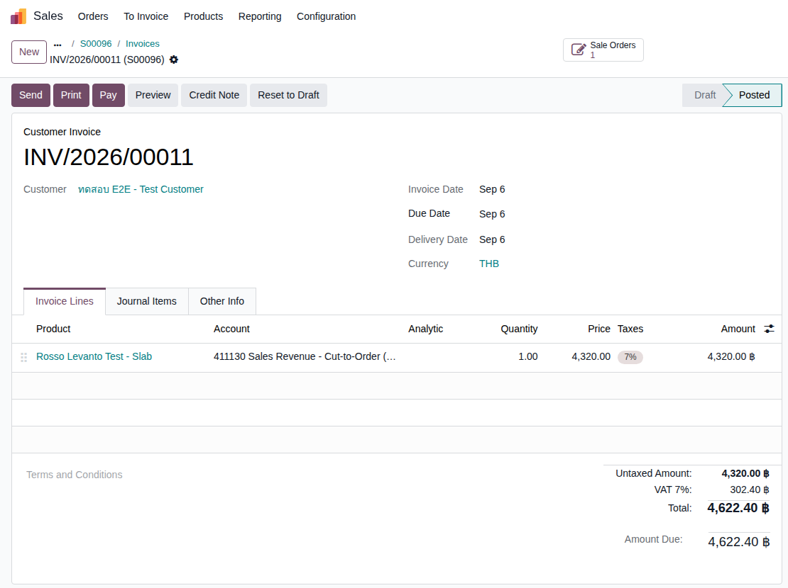 |
| TC-E2E-M3-12 | รับชำระเงินบนใบแจ้งหนี้ ปุ่มจริงในหน้าจอชื่อ "Pay" (ไม่ใช่ "Register Payment" ตามชื่อ technical เดิม) |
ทำ TC-E2E-M3-11 เสร็จแล้ว (Invoice = Posted) |
|
- | ใบแจ้งหนี้ขึ้นริบบิ้น "IN PAYMENT" มุมขวาบน (Payment Status: Not Paid → In Payment) — ตัวอย่างจริง: INV/2026/00011 | Medium | 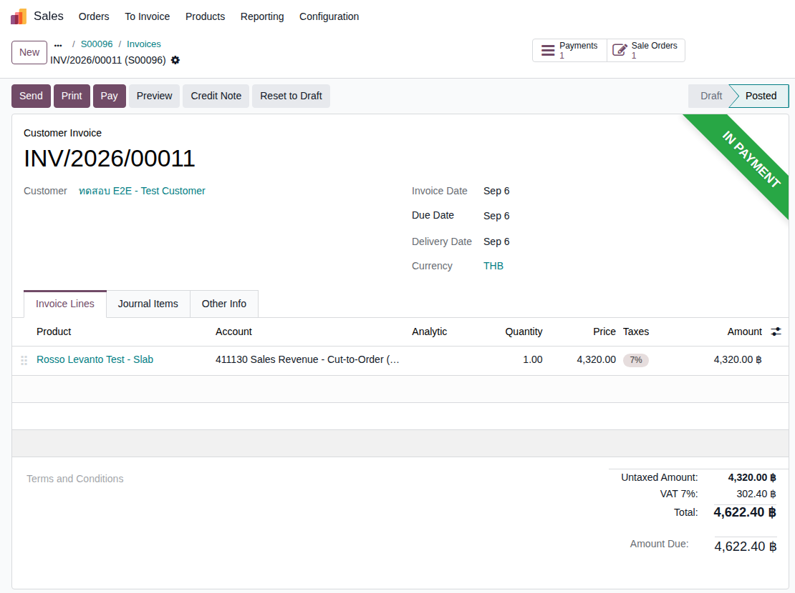 |
| TC-E2E-M3-13 | ตรวจรายการบัญชีบนใบแจ้งหนี้ (รายได้ + VAT + ลูกหนี้ + COGS) | ทำ TC-E2E-M3-11 เสร็จแล้ว |
|
- | เห็นเครดิต Sales Revenue - Cut-to-Order (Mode 3) 4,320.00, เครดิต Output VAT 302.40, เดบิต Trade Receivables 4,622.40 (รวม) ตรงตามยอดใบแจ้งหนี้ พร้อมคู่ COGS/Inventory ที่ระบบแนบมาด้วยอัตโนมัติบนใบแจ้งหนี้ใบเดียวกัน (เดบิต COGS 400.00 / เครดิต Inventory 400.00) หมายเหตุชื่อบัญชี: บัญชี COGS ที่ขึ้นชื่อ "COGS - Block Direct Sale (Mode 1)" เป็นบัญชีเดียวกับที่ใช้ทุกโหมดที่ตัดสต็อกจาก Block (ไม่ได้จำกัดเฉพาะโหมด 1) ชื่อบัญชีเป็นเพียงชื่อที่ตั้งไว้ตอนสร้างบัญชีแรกสุด ไม่ใช่ตัวบ่งชี้ประเภทการขาย ไม่ใช่ error |
Medium | 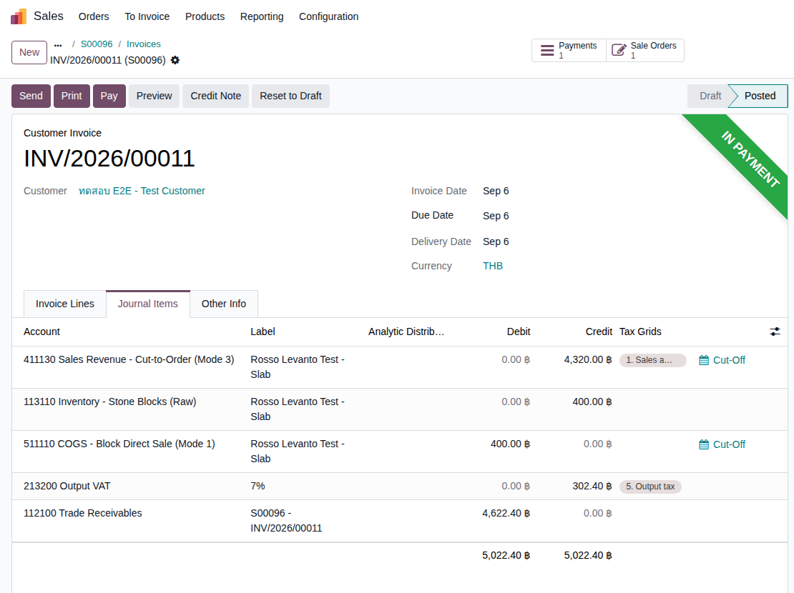 |
| TC-E2E-M3-14 | ตรวจว่าต้นทุนขาย (COGS) ไม่ถูกบันทึกซ้ำ ✅ ยืนยันแล้วจากการรันจริง 2 รอบอิสระ: ปัญหา COGS บันทึกซ้ำที่เคยพบใน Mode 1/2 (TC-E2E-M1-12 / TC-E2E-M2-12) ไม่เกิดกับการรันนี้ — เพราะรันหลัง ADR-054/055 แก้ไขแล้วในวันเดียวกัน (2026-09-06) ก่อนหน้านี้ Mode 1/2 พบคู่ COGS/Inventory ขึ้นซ้ำสองชุด (ใบแจ้งหนี้ฝังเองชุดหนึ่ง + Journal Entry แยกจากใบส่งของอีกชุด) จากบั๊ก native ของ Odoo ที่แก้ไปแล้ว |
ทำ TC-E2E-M3-10 เสร็จแล้ว (Delivery = Done) และ TC-E2E-M3-11 เสร็จแล้ว (Invoice = Posted) |
|
- | ไม่พบ Journal Entry แยกต่างหากที่อ้างอิงใบส่งของเลย (ผลค้นหา 0 รายการ) — คู่ COGS/Inventory ที่เห็นใน TC-E2E-M3-13 (ฝังอยู่ในใบแจ้งหนี้) เป็นชุดเดียวที่มีอยู่จริง ไม่ซ้ำ | Medium | 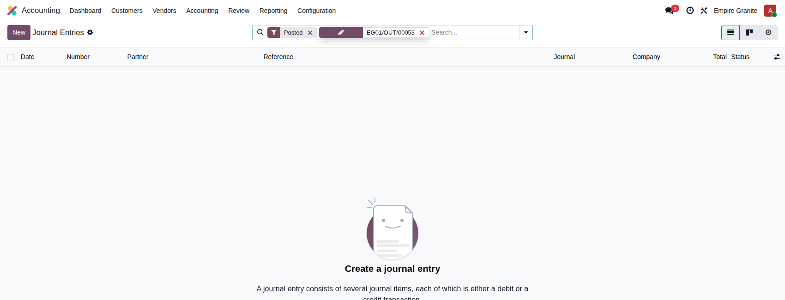 |